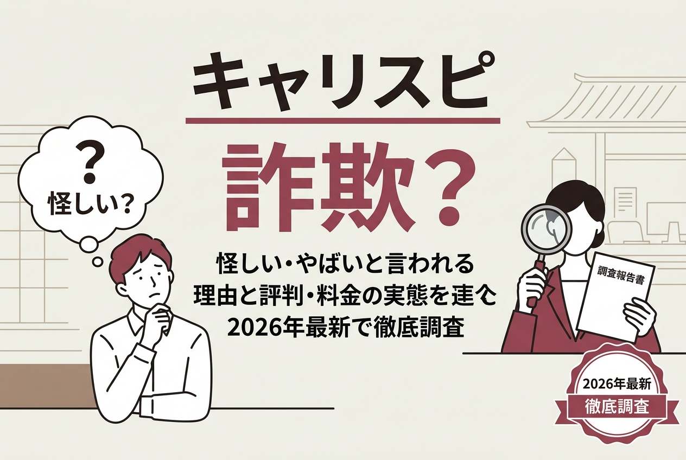
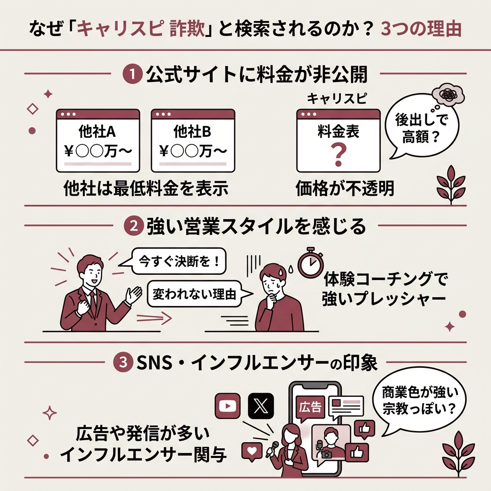
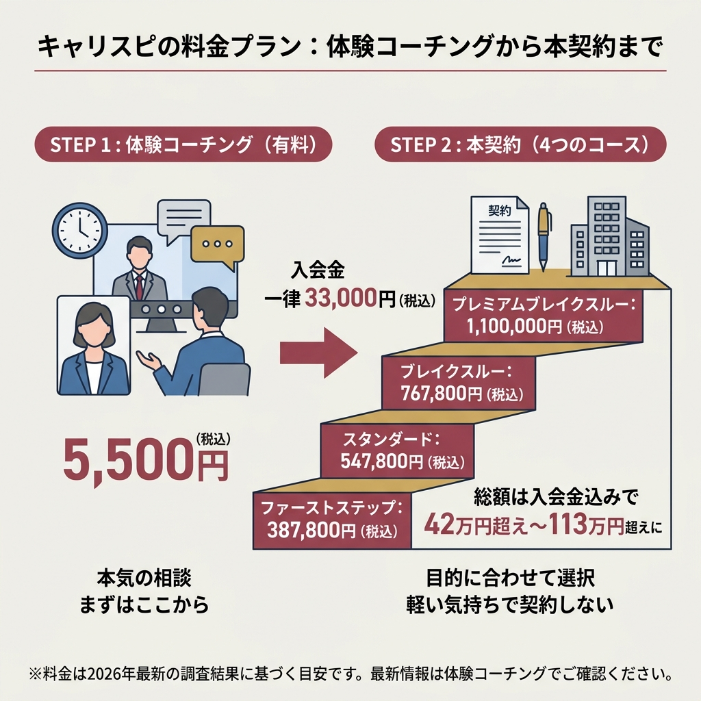
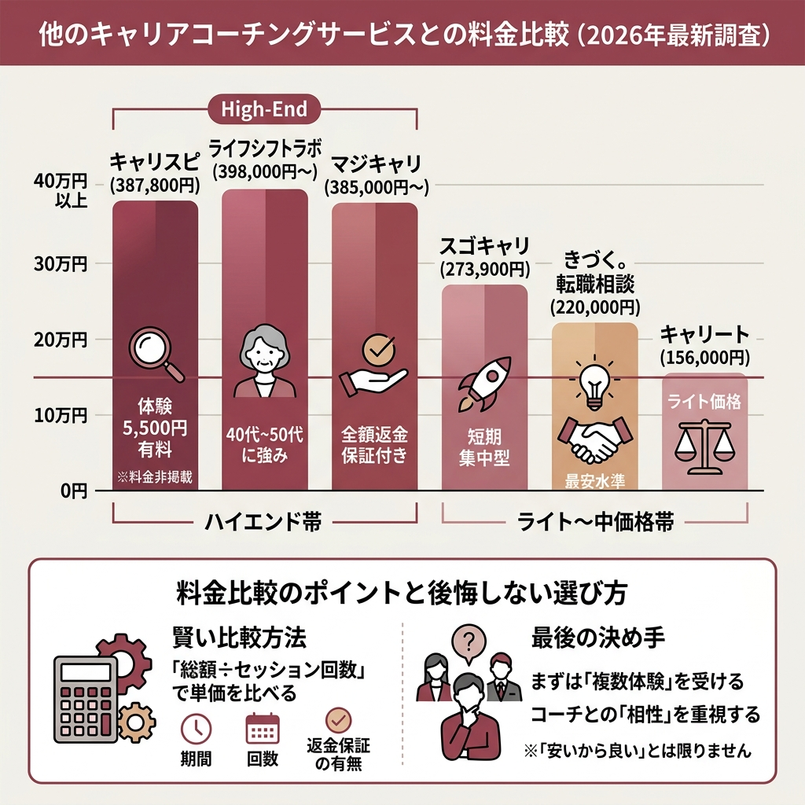
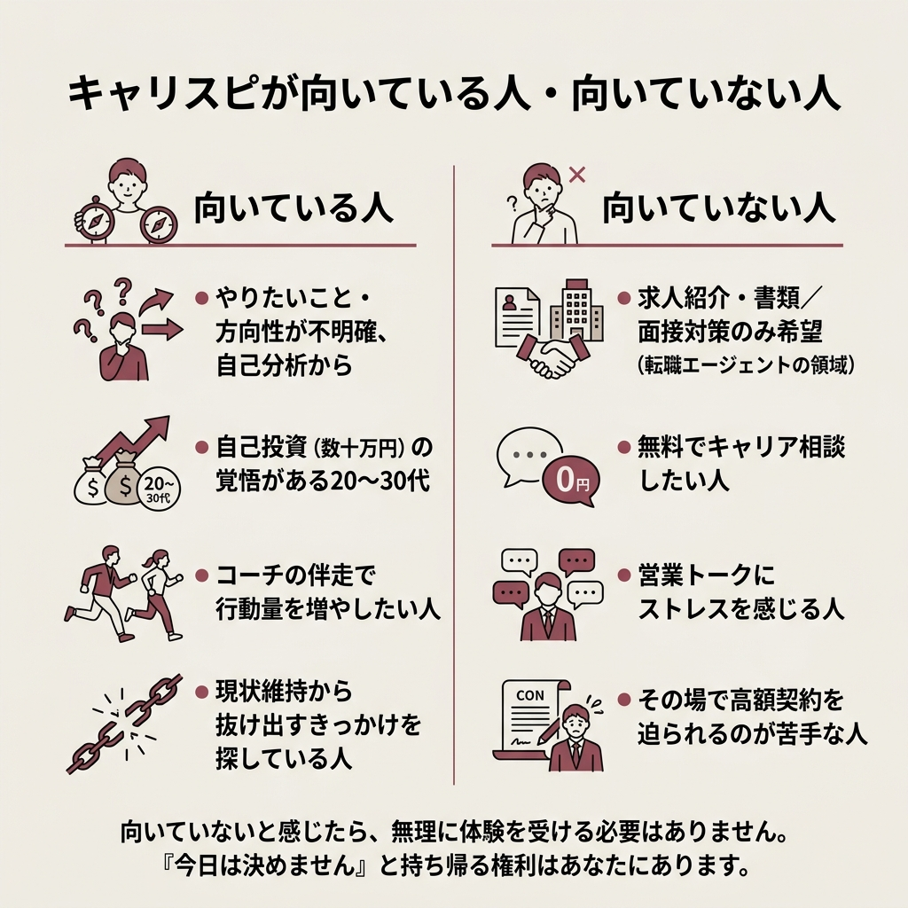

キャリスピは詐欺？怪しい・やばいと言われる理由と評判・料金の実態を2026年最新で徹底調査

「キャリスピ 詐欺」と検索して、このページにたどり着いた人はきっと不安でいっぱいだと思う。
結論から言うと、キャリスピは詐欺ではない。
株式会社ミズカラ（旧GOAL-B）が運営する、国に登記のある正規のキャリアコーチングサービスだ。
ただし「詐欺」というワードが検索候補に出てくるのには、ちゃんと理由がある。
この記事では、上位10媒体のレビュー記事と口コミを丸ごと読み込んだうえで、どこが不安視されているのか・実際の料金はいくらなのか・利用する価値はあるのかを、できるだけフラットに整理していく。
- キャリスピは詐欺ではなく、株式会社ミズカラ（東京都千代田区）が運営する正規の有料コーチング
- 「詐欺」と言われる最大の理由は、公式サイトに料金が非掲載なこと
- 実際の料金は387,800円〜1,100,000円＋入会金33,000円
- 体験コーチングは5,500円の有料で、無料ではない
- 強引な営業が合わない人がいる一方、「人生が前進した」という声も多い
結論：キャリスピは「詐欺」ではない。ただし“グレー”と感じる要素はある
最初にはっきり言っておく。
キャリスピは詐欺ではない。
運営会社・所在地・代表者・電話番号まで開示されていて、架空の会社ではない。
でも、検索候補に「詐欺」って出てくるのが怖いんだけど……。
それは「料金が非公開」「営業が熱量高め」「SNS露出が多い」という3点が重なって、“胡散臭さ”に見えてしまっているからなんです。
実際に上位の口コミ系サイトを読み込むと、「詐欺だった」と断定している記事は1本もなかった。
そのかわり「合う人と合わない人の差が激しい」「即決を迫られて不快だった」という声がセットで出てくる。
つまり、サービス自体が違法・虚偽なのではなく、“売り方”と“値段の高さ”が不安の正体というのが正直なところだ。
キャリスピとは？運営会社「株式会社ミズカラ（旧GOAL-B）」の基本情報
 出典: mizukara.com
出典: mizukara.comまず土台となる運営会社の情報を押さえておく。
ここを確認するだけでも、「得体の知れない会社じゃない」ことが分かって少し安心できるはずだ。
会社概要と代表者
キャリスピは、株式会社ミズカラが運営するキャリアコーチングサービスだ。
2024年11月に社名を「株式会社GOAL-B」から「株式会社ミズカラ」へ変更しており、サービス名も以前は「GOAL-Bコーチング」と呼ばれていた時期がある。
| 項目 | 内容 |
|---|---|
| 社名 | 株式会社ミズカラ（旧GOAL-B） |
| 所在地 | 東京都千代田区内幸町2-2-3 日比谷国際ビル 6階 |
| 設立 | 2019年7月 |
| 代表者 | 村岡大樹 |
| 電話番号 | 03-5532-5936 |
| 事業内容 | 個人向けキャリアコーチング、人材研修、転職エージェント事業ほか |
| 公式URL | https://mizukara.com/ |
住所も電話番号もきちんと公開されていて、郵便物も電話も届く状態になっている。
これは、少なくとも「会社ごと消えて連絡がつかない」タイプの詐欺スキームとは正反対だ。
サービスの位置づけ
キャリスピは、自己分析・キャリア設計・目標設定・行動支援までを、マンツーマンでサポートするキャリアコーチングサービスである。
「やりたいことが分からない」「将来が不安」という20〜30代の利用が多いと紹介されている。
注意したいのは、キャリスピは転職エージェントではないという点だ。
求人を紹介して内定を取りに行くサービスではなく、あくまで自分の軸を言語化して行動を後押しするのがコーチの役割になる。

なぜ「キャリスピ 詐欺」と検索されるのか？3つの理由
 出典: www.e-cole.co.jp
出典: www.e-cole.co.jpGoogle検索で「キャリスピ」と打ち込むと、「怪しい」「やばい」「詐欺」「胡散臭い」といったワードが候補に表示される。
複数の口コミ系サイトが一致して指摘していた“不安の源”は、大きく3つに集約される。
理由1：公式サイトに料金が掲載されていない
キャリスピの公式サイトには、料金表が載っていない。
これは、他社のキャリアコーチングと比較すると珍しい部類に入る。
| サービス | 料金 | 公式サイト |
|---|---|---|
| キャリスピ | 非公開（体験コーチング時に開示） | mizukara.com |
| マジキャリ | 385,000円〜 | majicari.com |
| きづく。転職相談 | 220,000円〜 | kidzukutensyoku.com |
| ライフシフトラボ | 398,000円〜 | lifeshiftlab.jp |
他社は最低料金が公式サイトにちゃんと書いてある。
価格の不透明さは、そのまま「後出しで高額請求されるのでは？」という疑念につながりやすい。
これがまず、詐欺ワードが並ぶ最大の理由だ。
理由2：人によっては営業スタイルがしつこく感じる
口コミを読み込むと、体験コーチングの場で「今決めないと変われない」「過去もそうやって決断を先延ばしにしてきただけ」と強めに背中を押された、という声がいくつも見つかる。
コーチ側はキャリア支援に対して熱量があるメンバーが多く、それが「営業色が強い」と感じられることがあるようだ。
熱量を頼もしく感じる人もいれば、プレッシャーとして受け取る人もいる。
ここの相性が悪いと、一気に「やばい」という印象に振れてしまう。
理由3：SNSでの露出が多くインフルエンサー色が強い
キャリスピは、SNSで影響力のあるインフルエンサーが多く関わっている。
YouTubeやX（旧Twitter）で広告・発信を頻繁に見かけるため、「商業色が強い」「宗教っぽい」と誤解されるケースもあると紹介されている。
Yahoo!知恵袋でも、YouTube広告経由で「怪しくないですか？」という質問が投稿されていた。
露出の多さは認知度につながる一方で、批判的なコメントも集めやすい、というのがSNS時代の宿命でもある。

キャリスピの料金プラン：体験コーチングから本契約まで
 出典: up-survive.com
出典: up-survive.comここが一番知りたいポイントだと思う。
先に結論を言うと、キャリスピ本契約の料金は387,800円〜1,100,000円、入会金は一律33,000円、体験コーチングは5,500円だ。
本契約4コースの料金
口コミ記事の中で、実際に体験コーチングに参加した人が公開している料金表が以下になる。
| コース | 料金 | 入会金 |
|---|---|---|
| ファーストステップ | 387,800円 | 33,000円 |
| スタンダード | 547,800円 | 33,000円 |
| ブレイクスルー | 767,800円 | 33,000円 |
| プレミアムブレイクスルー | 1,100,000円 | 33,000円 |
一番安いファーストステップでも、入会金を含めると総額は42万円を超える。
一番上のプレミアムブレイクスルーは入会金込みで113万円を超える計算になる。
正直、軽い気持ちで契約していい金額ではない。
体験コーチングは有料（5,500円）
ここが見落としやすいポイントだ。
キャリスピの体験コーチングは、5,500円の有料である。
他社には体験セッションを無料で提供しているところも多く、キャリアコーチングに馴染みがない人にとってはハードルが高く感じられるかもしれない。
ただ、有料だからこそ本気度の高い人しか来ないので、コーチ側もちゃんと時間を使ってくれる、という見方もできる。
なお、初回面談時に紹介割引を活用することで、10,000円分のAmazonギフト券がもらえる、という記載もあった。
キャリスピの良い評判・体験談
 出典: www.e-cole.co.jp
出典: www.e-cole.co.jpここまで不安要素ばかり並べてきたが、キャリスピには前向きな口コミも確かに多い。
ネガティブな口コミと同じくらいの熱量で、「人生が変わった」という声が寄せられているのも事実だ。
やりたいことが言語化できた
最も多かった好評ポイントが、「自分のやりたいこと・価値観が言語化できた」という種類の声だった。
高評価に共通する3つのパターン
良い口コミを並べてみると、共通する特徴が見えてくる。
- 自己理解が深まり、やりたいことが明確になった
- 現状の悩みを打開する「行動」につながった
- コーチが親身に寄り添ってくれた
特に「何がしたいか分からない」という漠然とした悩みを抱えている層からの評価が高い傾向にある。
逆に言うと、明確に転職先の業界と職種まで決まっている人には、キャリアコーチングそのものが刺さりづらい。
ポジティブな口コミの共通点って、結局なんなの？
「悩みがぼんやりしている人」です。やりたいことが決まっている人より、“まず自分と向き合いたい人”に刺さる傾向があります。
キャリスピの悪い評判・体験談
 出典: job.or.jp
出典: job.or.jp一方で、否定的な口コミも少なくない。
良い口コミとセットで、こちらもしっかり確認しておいた方がいい。
強引な営業スタイルへの戸惑い
最も目立ったのが、「マルチと変わらない強引な営業を受けた」という種類の声だった。
口コミの傾向を見ると、「その場で決断を迫られた」ことに対する拒否反応が強い。
30万円〜100万円の自己投資をその場で決めろ、と言われれば、誰だって身構えるのが自然な反応だろう。
コーチの質にバラつきがあるという声
もう1つ目立ったのが、担当コーチへの物足りなさを指摘する声だ。
コーチは複数在籍しているため、担当する人によって満足度に差が出るのは構造上避けられない。
違和感を覚えた場合は、担当コーチの変更を相談できないか確認してみるのが現実的な対応になる。
ネガティブな声に共通する傾向
- 営業が強引：即決を迫られる・圧を感じる
- 料金が高い：最低でも約40万円、公式に料金非掲載
- コーチの質に差がある：経験の浅い講師に当たる可能性
- 相性のミスマッチ：コーチの雰囲気が合わなかった
高額な自己投資なので、「即決せず」「複数サービスと比較する」という当たり前を徹底するだけでも、失敗のリスクはかなり下がる。
キャリスピのメリット・デメリットを整理する
ここまでの評判を踏まえて、メリットとデメリットをフラットに整理しておく。
契約前に、どちらも冷静に見比べておきたい。
- 実績豊富なコーチが多数所属している（大手コンサル・大手企業人事経験者など）
- 受講者の平均年収アップが67万円と開示されている
- 体験コーチング受講者は11,000名を突破
- 顧客満足度アンケートで9.5/10という自社データがある
- 現状の外側にGOALを設定するコーチングメソッド
- 自分では気づけない「強み・らしさ」を引き出すサポート
- 公式サイトに料金が記載されていない
- 体験コーチングが5,500円の有料
- 営業がしつこいと感じた、という口コミが一定数ある
- 担当コーチによって満足度に差が出る可能性
- 他社の最安プランと比べて料金は高めの水準
なお、上記の数字はいずれもキャリスピ側が開示している自社データであり、第三者機関による検証ではない点は頭に入れておいた方がいい。
キャリアアップをしたい人は、自分の悩みに合わせてどのようなコーチとのセッションを希望したいか伝えてみるのがオススメです。
採用百科事典（キャリスピのメリット解説より）

他のキャリアコーチングサービスとの料金比較
 出典: axxis.co.jp
出典: axxis.co.jpキャリスピだけを見ていても、その料金が高いのか妥当なのかは分からない。
上位記事で紹介されていた、他社サービスの最安プラン料金と並べてみる。
| サービス名 | 最安プラン料金 | 特徴 |
|---|---|---|
| キャリスピ | 387,800円（ファーストステップ） | 公式に料金非掲載／体験は5,500円有料 |
| マジキャリ | 385,000円〜 | 全額返金保証付きと紹介されている |
| きづく。転職相談 | 220,000円（1ヶ月プラン） | 最安水準 |
| ライフシフトラボ | 398,000円〜 | 40代〜50代に強いと紹介されている |
| スゴキャリ | 273,900円（スピードキャンプ） | 短期集中型 |
| キャリート | 156,000円（キャリア設計コース） | 比較的ライトな価格帯 |
こうして並べてみると、キャリスピの最安プラン（387,800円）は、マジキャリやライフシフトラボと同じ“ハイエンド帯”だと分かる。
一方で、きづく。転職相談やキャリートの最安プランは20万円前後と、半額近い設定になっている。
安いところで十分じゃないの？
価格だけで選ぶと、期間やサポート内容が薄くて満足できないケースもあります。まずは複数サービスの体験を受けて、コーチとの相性で決めるのが一番の失敗回避策ですよ。

キャリスピが向いている人・向いていない人
ここまでの情報をまとめると、キャリスピは「誰にでもおすすめ」のサービスではないことが分かってくる。
向き不向きをはっきり分けて整理しておく。
向いている人
- やりたいことや将来の方向性がはっきりせず、自己分析から見直したい人
- 自己投資として数十万円を出す覚悟がある20〜30代
- コーチに背中を押してもらうことで行動量を増やしたい人
- 「現状維持」から抜け出すきっかけを真剣に探している人
向いていない人
- 求人紹介・書類添削・面接対策だけが欲しい人（※それは転職エージェントの領域）
- 無料でキャリア相談を済ませたい人
- 営業トークに対して強いストレスを感じやすい人
- その場で高額契約を迫られるのが苦手な人
自分が後者に当てはまりそうな場合は、無理に体験を受ける必要はない。
勇気を持って「今日は決めません」と持ち帰る権利は、当然こちら側にある。
体験コーチング申し込みから契約までの流れ
実際に体験コーチングに申し込む場合、どんな流れになるのか事前に把握しておくと安心だ。
口コミ記事の記述をもとに、大きな流れを整理した。
公式サイトから申し込み
キャリスピ公式（mizukara.com）の申込フォームから、体験コーチングを予約する。
体験コーチングを受ける（5,500円）
マンツーマンのオンラインセッション。現在の悩みや目標をヒアリングされる。料金の説明もここで行われる。
プラン提案と見積もり
体験の終盤で、4コース（ファーストステップ〜プレミアムブレイクスルー）のどれが合うかを提案される。
検討して返事（持ち帰り可）
その場で即決する義務はない。口コミには「即決を迫られた」という声もあるため、断りづらい場合は「家族に相談して後日返事します」と伝えるのが無難。
本契約・オンボーディング
契約後、担当コーチとの初回セッションがスタート。目標設定→行動計画→定期セッション、という流れで進む。
キャリスピに関するよくある質問（FAQ）
 出典: nihongokyoshi-job.com
出典: nihongokyoshi-job.com上位記事で繰り返し扱われていた質問を、1問1答で整理しておく。
まとめ：キャリスピは詐欺ではない。ただし「即決は絶対にしない」が鉄則
最後に要点だけ振り返っておく。
- キャリスピは詐欺ではない。運営は株式会社ミズカラ（旧GOAL-B）という登記済みの企業
- 料金は387,800円〜1,100,000円＋入会金33,000円。体験コーチングは5,500円
- 「詐欺」と言われる理由は、料金非公開・営業の熱量・SNS露出の3点
- 良い口コミも悪い口コミもあり、担当コーチとの相性の影響が大きい
- 契約前に、必ず複数サービスの体験を比較すること
- 体験当日の即決は避け、「持ち帰って検討します」と言える準備をしておく
キャリスピは、“詐欺かどうか”よりも“自分に合うかどうか”で判断すべきサービスだ。
数十万円の自己投資をする以上、1社だけで決めるのはもったいない。
気になっているなら、まずは他社の無料カウンセリングも並行して受けて、コーチとの相性と料金感を比べてから決めるのが一番の失敗回避策になる。
調べ上げて改めて思ったのは、検索候補の「詐欺」は怖いけれど、その言葉を鵜呑みにするほどでもなかった、ということだった。